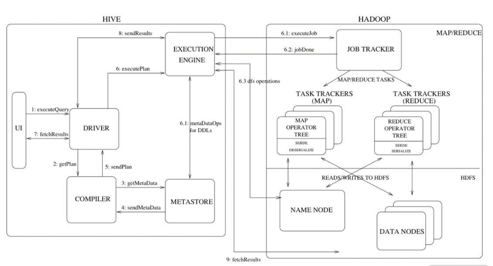
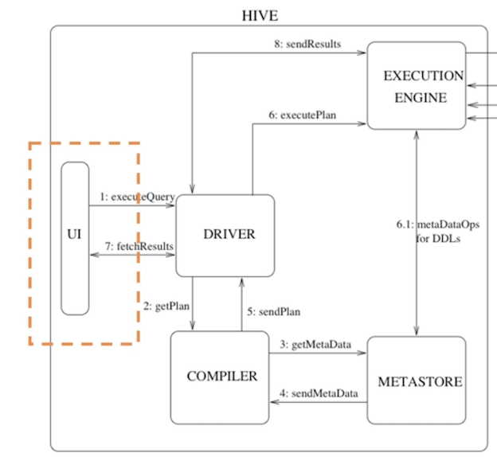
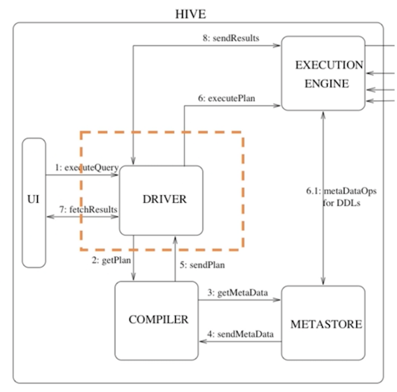
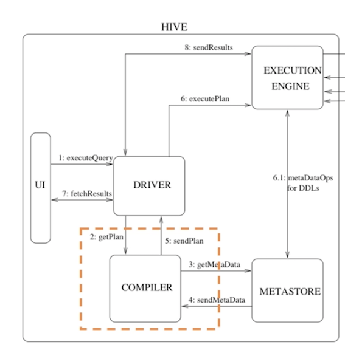
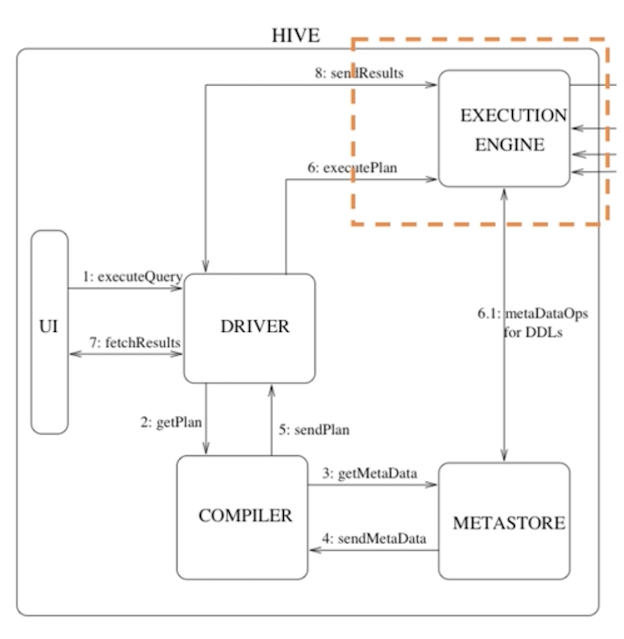
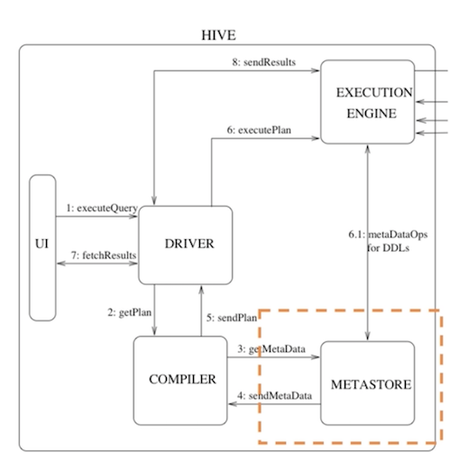
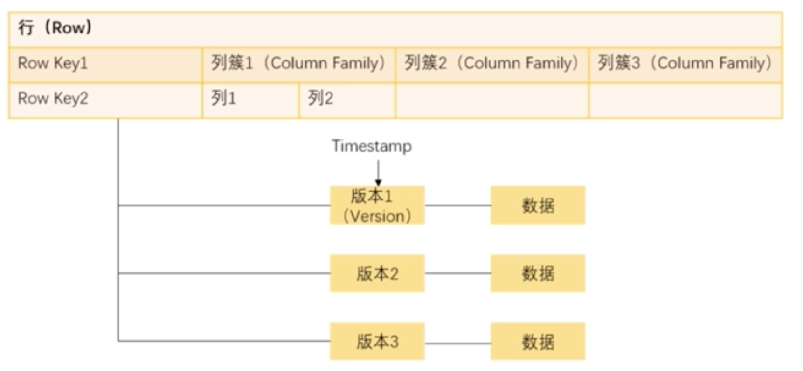

第五节 HBase 和 Hive
在日常工作中经常用的而且与 HDFS 有紧密联系的两个工具 Hive 和 HBase。
在 Hadoop 系统中，负责计算的部分是 MapReduce，也就是说我们要处理 HDFS 中存储的数据，进行各种统计分析以及运算的话需要去开发一个 MapReduce 程序。
虽然说 MapReduce 已经对分布式计算进行了很好的封装， 但是使用其 API 进行开发对于很多人来说仍然是一件很困难的事情。
比如说很多的数据产品经理或者运营人员只是想统计一下数字，却要去学习如何写代码开发的一套程序，这个难度可想而知，因此 Hive 便应运而生。Hive 会解析 SQL 语句然后转化成 MapReduce 的程序运行，只是学习 SQL 语句对于一个产品经理来说就要简单得多了。
简单来说，Hive 就是一个数据仓库，仓库中的数据都是在 HDFS中管理的数据文件，同时 Hive 支持类似 SQL 语句的功能，
你可以通过这些语句来进行数据分析，Hive 会把这些语句转换成可执行的 MapReduce 代码，然后进行计算。这里的计算，仅限于查找和分析。
Hive 所处理的是已经存储起来的数据，这种计算也就是我们所说的离线计算（区别于实时计算）。通过 Hive 的操作，可以让你在操作数据时感觉是在使用 MySQL，从而减少你的学习成本。
Hive 的基本体系架构。如下图所示：

1、Hive的体系架构
分成两大部分，左侧是 Hive 的主体，右侧是Hadoop 系统
右上是 MapReduce，右下是 HDFS，中间有几条线连接，说明了 Hive 与 Hadoop 两大核心的关系
1-1 UI
用户界面，主要负责与使用者的交互，我们通过 UI 向系统提交查询和其他操作。
当然，在 Hive 中还封装了 ThriftServer，我们可以在开发中使用 Java、 Python 或者 C++ 等语言来访问 Server，从而调用 Hive。

1-2 驱动器（Driver）
- 驱动器在接收 HiveQL 语句之后，
- 创建会话来启动语句的执行，并监控执行的生命周期和进度。
- 在图中可以看到，驱动器既负责与编译器的交互，又负责与执行引擎的交互。

1-3 编译器（Compiler）
- 编译器接收驱动器传来的 HiveQL，
- 并从元数据仓中获取所需要的元数据，
- 然后对 HiveQL 语句进行编译，将其转化为可执行的计划，
按照不同的执行步骤拆分成 MapReduce 和 HDFS 的各个阶段的操作并发送给驱动器。

1-4 执行引擎（Execution Engine）
在编译和优化之后，执行器将执行任务。它对 Hadoop 的作业进行跟踪和交互，调度需要运行的任务。

1-5 数据仓（Metastore）
元数据指的是我们构建的 Hive 表的表名、表字段、表结构、分区、类型、存储路径等等，元数据通常存储在传统的关系型数据库中，比如 MySQL。

2、Hive的优点
2-1 简单易上手
只需要了解 SQL 语言就可以使用 Hive，降低了使用 MapReduce 进行数据分析的难度，很多互联网公司都会使用 Hive 进行日志分析，比如说淘宝、美团等等，使用 Hive 统计网站的 PV、UV 等信
2-2 Hive 提供统一的元数据管理
通过元数据管理可以实现描述信息的格式化，使得数据可以共享给 Presto、Impala、SparkSQL 等 SQL 查询引擎。
2-3 可扩展性好
跟 Hadoop 的其他组件一样，Hive 也具备良好的可扩展性，只需要添加机器就可以部署分布式的 Hive 集群。
2-4 支持自定义函数（UDF）
SQL 的功能虽然非常多，但是对于一些个性化的定制方案，使用 SQL 明显要麻烦很多，Hive 支持使用自定义函数的方式来加入自己编写的功能，方便了开发人员。
3、Hive 也是有缺点
3-1 速度较慢
- 由于 Hive 的底层数据仍然是存储在 HDFS 上的，所以速度比较慢，只适合离线查询。
- 在写程序时一般也是使用 Hive 来一次性加载数据，不适合在代码中反复访问。
3-2 不支持单条数据操作
不能任意修改 HDFS 里的数据，所以 Hive 也不行，要想修改数据只能整个文件进行替换。
4、HBase
跟 Hive 不同，HBase 是一个在 Hadoop 大数据体系中应用很多的NoSQL 数据库，HBase 源于谷歌发表的论文：Bigtable。
HBase 同样利用 HDFS 作为底层存储，但是并不是简单地使用原本的数据，只是使用 HDFS 作为它的存储系统。
- 也就是说，HBase 只是利用 Hadoop 的 HDFS 帮助其管理数据的持久化文件。
- HBase 提供实时处理数据的能力，弥补了早期 Hadoop只能离线处理数据的不足

行键（Row Key)
一行数据的唯一标识
- 需要注意的是，HBase在存储Row Key的时候是按照字典顺序存放的
- 需要设计存储的Row Key，比如在每个旧的前面都加一个HASH值来提升查询性能
列簇（Column Family）
可以看作是一组列，
实际上一个列簇的作用也是用来管理若干个列，优化查询速度。所以列簇的名字要尽量短，同时对于经常需要一起查询的列放在一个列簇下面
HBase表中的列簇需要预先定义，而列不需要，如果要新增列簇就要先停用这个表。
单元（Cell）
指的是一个确定的存储单元。通过 Row Key、列簇 、列名以及版本号来确定。
时间戳（Timestamp）
用来标记前面说的一份数据的不同版本。
区域（Region）
一个 Region 可以看作是多行数据的集合。当一个表的数据逐渐增多，需要进行分布式存储，那么这个表就会自动分裂成多个 Region，然后分配到不同的 RegionServer 上面去。
5、HBase 的优缺点
HBase 的优势在于实时计算，所有实时数据都直接存入 HBase 中，客户端通过 API 直接访问 HBase，实现实时计算。
由于它使用的是NoSQL，或者说是列式结构，从而提高了查找性能，使其能运用于大数据场景，这是它跟 MapReduce 的区别。
除此之外，它还有其他优点。
- 容量大性能高。一张 HBase 表可以支持百亿行、数千列的存储，而查询效率不会有明显的变化。同时 HBase 还可以支持高并发的读写操作。
- 列存储，无须设定表结构。对于传统数据库，比如 MySQL 是按行来存储的，检索主要依赖于事前建立的索引，在数据量很大的时候增加列或者更新索引都是非常缓慢的，而 HBase 每一列都是单独存储的，每一行每一列的那一个单元都是独立的存储，也就是数据本身即是索引。
而 HBase 不能支持条件查询，也不能用 SQL 语句进行查询。在使用的时候，一般只能使用Row Key 来进行查询。
6、HBase 与 Hive 的使用
由于 HBase 支持实时随机查询的特性，主要使用 HBase 进行大量的明细数据的随机实时查询。
比如说以用户 ID 为 Key 的用户信息，以 Itemid 为 Key 的商品信息、各种交易明细等等。在数据收集上来之后通过解析实时流然后存储到 HBase 中，以备查询。而在查询 HBase 的时候一般也是对整条数据进行查询。
Hive 本身并不解决存储的问题，它只是把 HDFS 中的结构化数据进行了展示，而最核心的功能是实现了对这些结构化文件的查询。
在日常的工作中，通常使用 Hive分区表来记录一个时间段内的数据，并进行离线的批量数据计算，比如统计分析各种数据指标。
同为 Hadoop 体系的重要工具，Hive 与 HBase 也提供了一些访问机制。
有时候我们希望能够在 Hive 中查询 HBase 的数据，可以通过关联外表的形式，在 Hive 上创建一个指向对应Hbase 表的外部表。